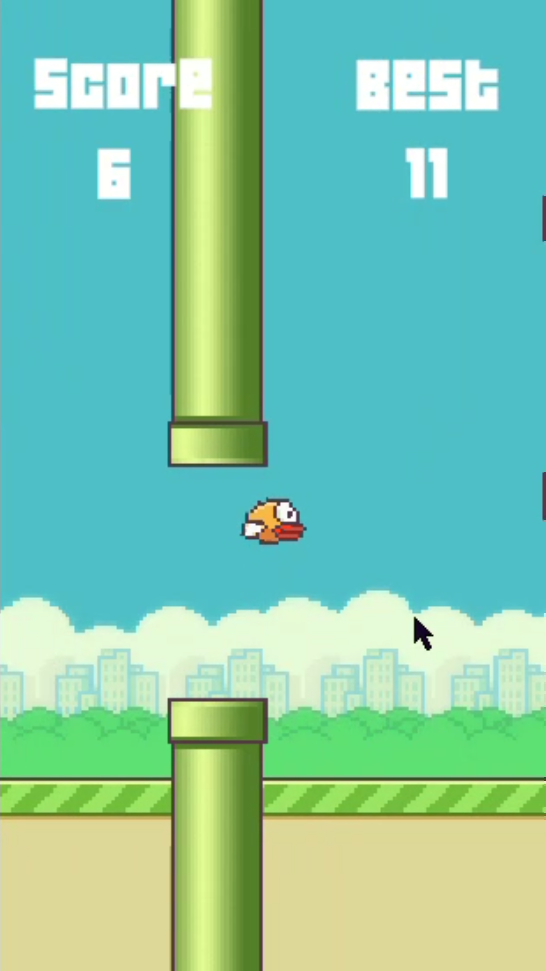
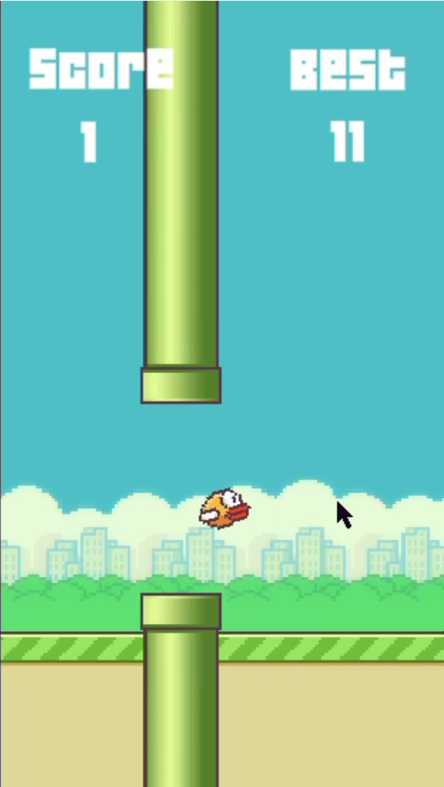
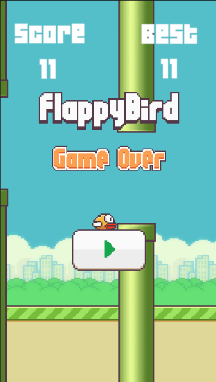

Unity Developer
I am a beginner Unity game developer who enjoys creating simple and interactive 2D games. This portfolio showcases a Flappy Bird style game developed using Unity and C#.
This is a 2D game inspired by Flappy Bird where the player controls a bird and must navigate through pipes without colliding with them. The score increases each time the player successfully passes an obstacle.


